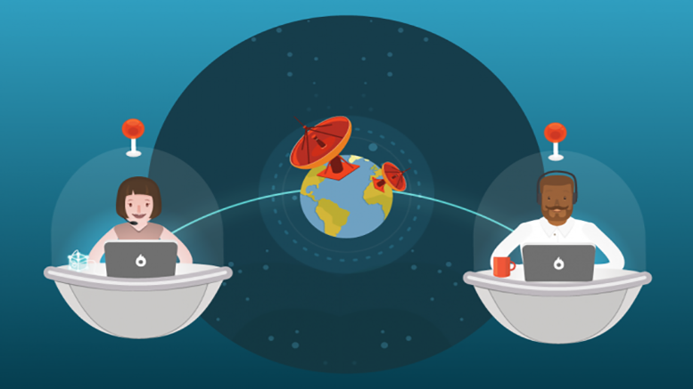

La pandemia de enfermedad por coronavirus ha provocado una crisis sin precedentes en todos los ámbitos. En la esfera de la educación, esta emergencia ha dado lugar al cierre masivo de las actividades presenciales de instituciones educativas en más de 190 países con el fin de evitar la propagación del virus y mitigar su impacto. Es por todos conocido, que la educación a lo largo de los años ha evolucionado y ha tenido cambios importantes, que algunos consideran para bien y otros no tanto, pero lo que es importante resaltar es que hay dos factores principales que han revolucionado el modo en el que entendíamos entonces y ahora las clases: la metodología del aprendizaje y las nuevas tecnologías.
En el pasado, la enseñanza se basaba mucho en la teoría y poco en la práctica. La forma de aprender era basada en la repetición. Para estudiar, el alumno repetía mentalmente la lección, la memorizaba, y con eso ya daba por aprendido un tema o lección. Se trataba de «captar» datos, pero sin necesariamente comprenderlos o interiorizarlos, ahora la educación es más participativa y la enseñanza es más avanzada y práctica, donde profesor y alumno son dos actores que están a un mismo nivel.
El profesor ya no se impone tanto y el alumno ha pasado de ser un objeto pasivo a activo. Se promueve su participación, su motivación, se le incentiva.
Antes de que apareciera el Internet en nuestras vidas, para investigar sobre cualquier tema se tenía que ir a una biblioteca y pedir los libros que se necesitaba. Nos planteamos que ya no podríamos vivir sin muchas de las comodidades que nos da el teléfono móvil, seguro que muchos niños se preguntan cómo éramos capaces de estudiar antes sin Internet.